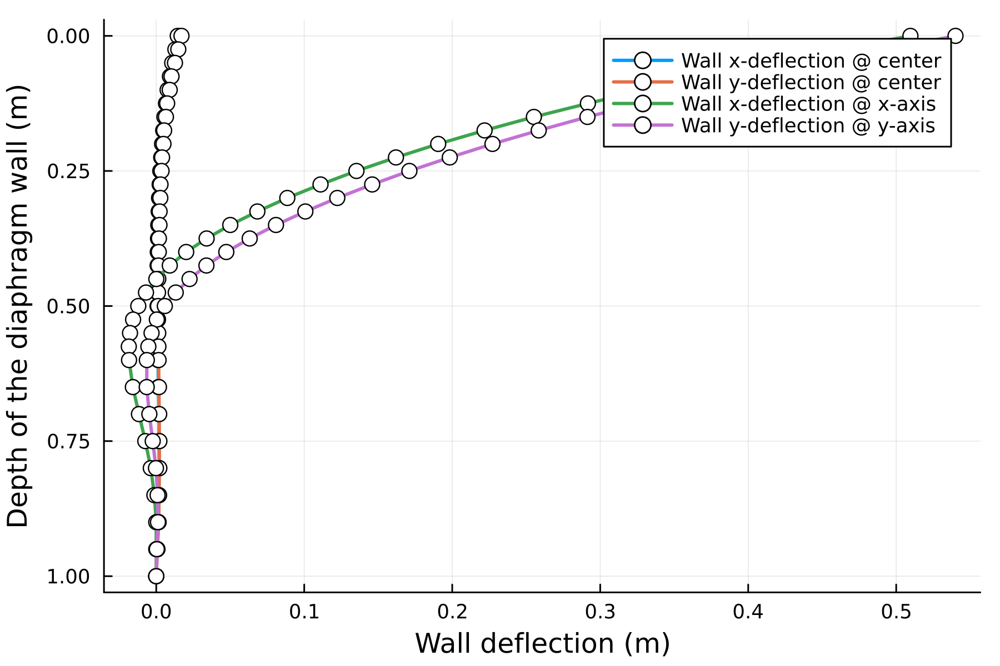

Excavation without interface (robust results)
Excavation stage 1
To exmaine the influence of constitutive models on the model behaviours, the Hooke3d, LSSO, DPconst, and DPSSO models are examined for the first stage of excavation
julia> PARAMS = PARAMSDT(CONSTM="Hooke3d") Figure 1. The wall deflections due to the first excavation with Hooke3d model.
julia> PARAMS = PARAMSDT(CONSTM="LSSO") 
Figure 2. The wall deflections due to the first excavation with LSSO model.
julia> PARAMS = PARAMSDT(CONSTM="DPconst", TOL=1e-4, THETA=π/6) Figure 3. The wall deflections due to the first excavation with DPconst model.
julia> PARAMS = PARAMSDT(CONSTM="DPSSO", TOL=1e-4, THETA=π/6) Figure 4. The wall deflections due to the first excavation with DPSSO model.
Notes: if the yield function of Drucker-Prager is changed, then the behaviour will change dramatically.
Excavation stage 2
julia> PARAMS = PARAMSDT(CONSTM="Hooke3d") Figure 5. The wall deflections due to the second excavation with Hooke3d model.
julia> PARAMS = PARAMSDT(CONSTM="LSSO") Figure 6. The wall deflections due to the second excavation with LSSO model.
julia> PARAMS = PARAMSDT(CONSTM="DPconst", TOL=1e-4, THETA=π/6) Figure 7. The wall deflections due to the second excavation with DPconst model.
julia> PARAMS = PARAMSDT(CONSTM="DPSSO", TOL=1e-4, THETA=π/6) 
Figure 8. The wall deflections due to the second excavation with DPSSO model.